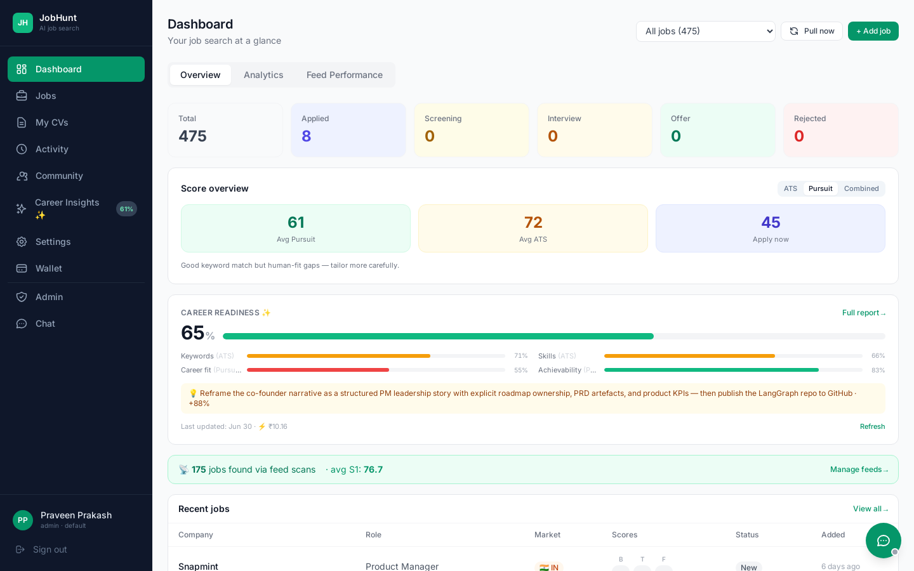
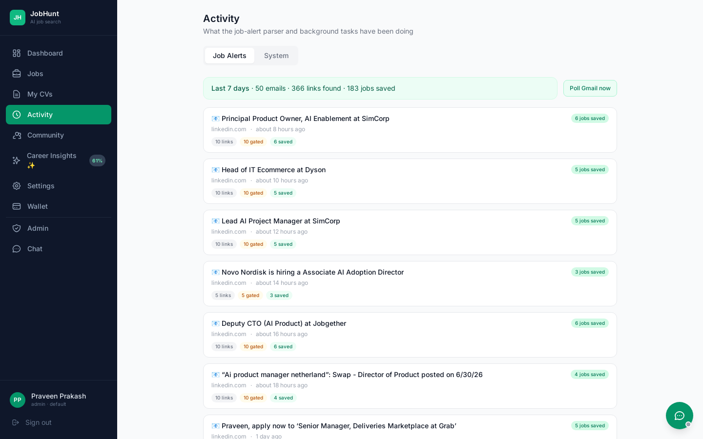
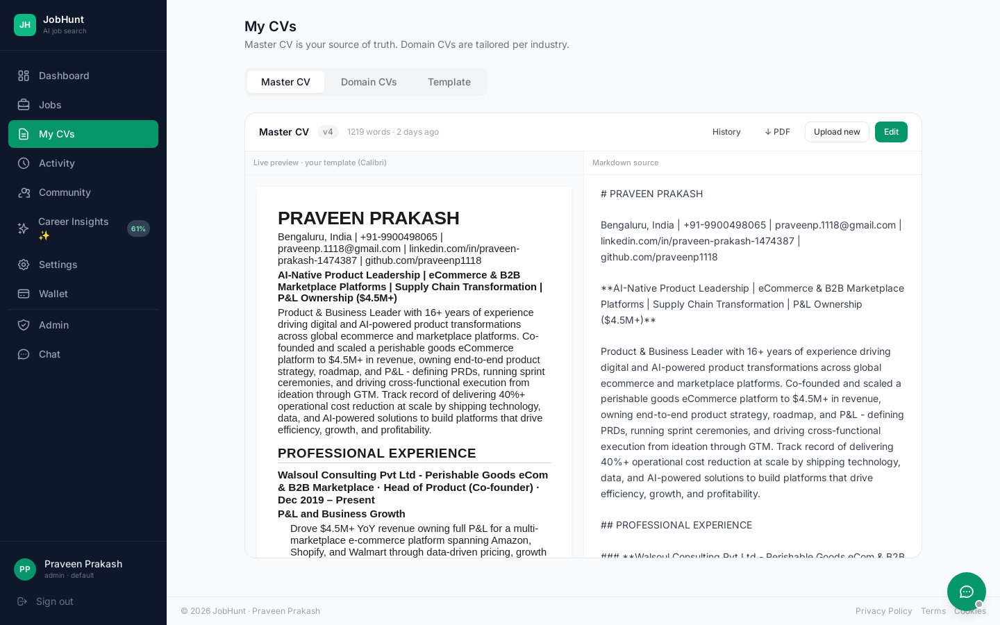
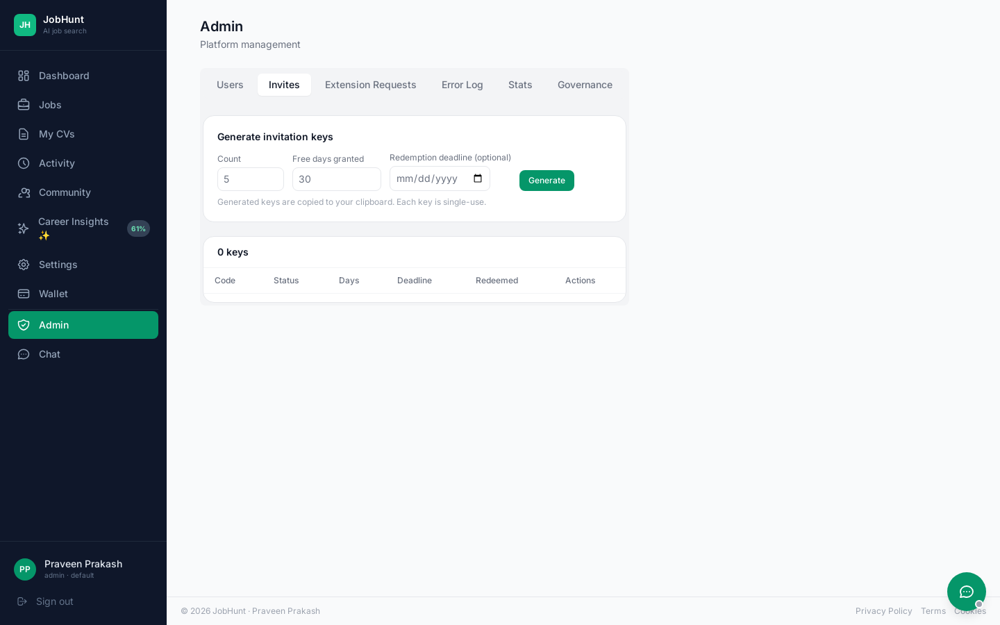

See it in action






AI-powered job search platform for senior product leaders
AIJobsHunt automates the highest-effort parts of a senior product leadership job search. It scans curated feeds and Gmail job-alert digests, scores every opportunity against your master CV and multiple domain-specific CVs, then tailors your CV and cover letter for each role — making only bounded, factual edits and never inventing experience. Everything is tracked end-to-end, from discovery to application to recruiter follow-up.
148
smoke tests
82%
scoring cost reduction
3-stage
hybrid-RAG pipeline
50+
API endpoints
Per-job CV + cover letter with a strict golden rule — reorder, rephrase, inject keywords only. Scored on S1 (base fit), S2 (tailored fit) and S3 (factual integrity), with a hard gate before anything is sent.
Every job is scored against your master CV and all active domain CVs (e.g. AI & Data, Supply Chain, eCommerce, FinTech). The best-fit domain surfaces automatically and pre-selects when you tailor.
A 3-stage funnel — free keyword pre-filter → Haiku essence scoring → Sonnet only for borderline jobs — cuts scoring cost ~82% with no quality loss. Three presets, a live cost calculator, and an optional 2 AM night-batch mode.
Aesthetic rules (font, size, margins, spacing, bullets, accent) drive deterministic PDF styling; content rules (page budget, never-modify sections, order) shape the tailor prompt. Global + per-domain overrides, live previews, and an overflow "trim to fit" guard.
Forward any job URL to your job-search Gmail with a subject like jh: — it's auto-fetched, parsed, scored, and saved to your tracker, with a confirmation email back. The poll also auto-detects "application sent" confirmations and marks jobs Applied.
Detects LinkedIn / Indeed / company job-alert digests in your inbox (rule-based, no AI cost), extracts job cards straight from the email body for login-gated sources, and scores + saves the relevant ones.
Scheduled scanning of RSS boards and Apify actors (LinkedIn, Google Jobs). Keyword profiles are driven by your domain CVs, with a keyword pre-filter before any paid scoring call.
Full visibility into every scan and poll: per-feed funnels (raw → pre-filter → above-threshold → saved), job-alert timelines, error logs, and manual "run now" controls at every level.
A pipeline from new through applied, interview, offer and ghosted, with recruiter email threads, human-in-the-loop reply approval, and automatic follow-up drafting.
One cached (7-day) batch Claude call across all your tracked JDs produces a readiness score and a 7-tab gap analysis — Readiness, Keywords, Skills, Experience, Certifications, Build and a checkable improvement Roadmap, plus a Dashboard widget.
Every Claude + Apify call is logged with token counts and ₹/$ cost. Inline token badges appear at the point of action in 12 places, with a Settings → API Usage tab, category breakdown, and CSV export.
An in-app widget on every page: a rule-based FAQ bot (12 categories, no AI cost) with live WebSocket hand-off to an admin when online, or a ticket + email notification when offline. Attachments up to 5 MB.
Registration is open, but a new account is inert (read-only) until entitled — by redeeming a single-use invite key (30 days free) or subscribing to AIJobsHunt Pro (₹500/mo via Stripe). Every Claude-calling route is gated (402 until entitled); the gate is expiry-aware, admins bypass, and invited users can request an extension.
AES-256 encryption, bcrypt + JWT, per-user rate limiting, prompt-injection hardening, an anti-hallucination check, Redis login lockout, an immutable audit log, and security-headers middleware.
A self-service Privacy tab: see what's stored, export everything as a ZIP, and request account deletion with a 30-day grace period. Consent is captured at sign-up. Privacy-first — no tracking, no data selling.




Local Docker deployment — six services. The Celery worker drives the four input pipelines; the API serves the React tracker and orchestrates AI calls.